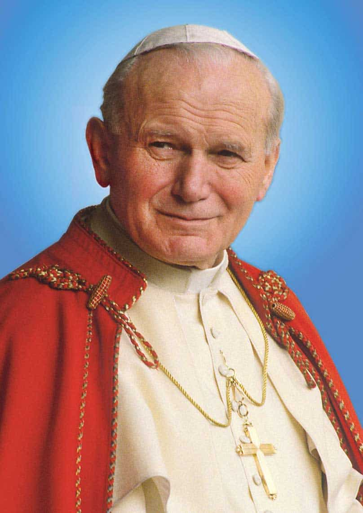
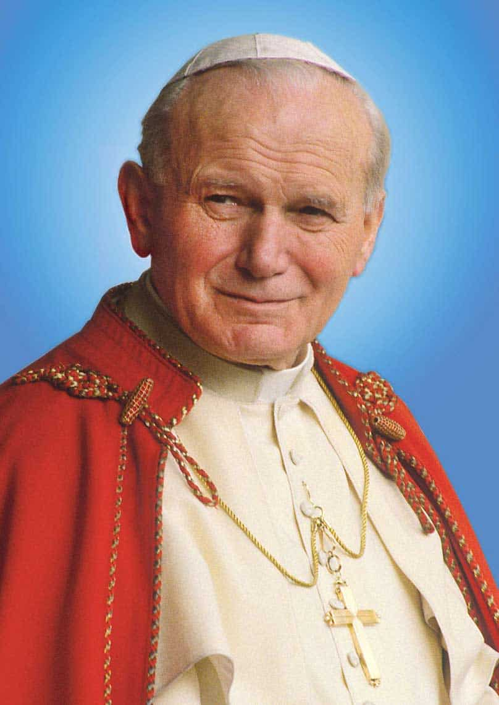

Infancia
Conocido por sus amigos como Lolek, creció bajo la amorosa orientación de su padre, era un joven activo, atlético, estudioso y un talentoso actor de teatro. El joven Karol asistió a la Universidad Jagiellonian de Cracovia en 1938, donde estudió polaco, literatura, teatro y poesía.

Acontecimientos importantes
Juan Pablo II, nacido como Karol Józef Wojtyła en 1920 en Wadowice, Polonia, es recordado como uno de los papas más influyentes de la historia. Fue ordenado sacerdote en 1946 y, después de estudiar en Roma, regresó a Polonia, donde se convirtió en arzobispo de Cracovia. Su experiencia pastoral en un país bajo el régimen comunista le dio una perspectiva única sobre la relación entre la Iglesia y el Estado, lo que marcaría su pontificado.
El 16 de octubre de 1978, fue elegido Papa, convirtiéndose en el primer pontífice no italiano en más de 450 años. Su elección fue vista como una señal de esperanza, especialmente en su Polonia natal, donde su influencia fue decisiva para el eventual colapso del comunismo en Europa del Este.
Juan Pablo II jugó un papel fundamental en la caída del Muro de Berlín y el fin de la Guerra Fría. Su apoyo al movimiento Solidaridad en Polonia inspiró a millones y demostró el poder de la resistencia pacífica contra regímenes opresivos.
Durante su pontificado, viajó a más de 120 países, promoviendo los derechos humanos, la dignidad de la vida y el diálogo interreligioso. En 1981, sobrevivió a un atentado en la Plaza de San Pedro, lo que fortaleció aún más su devoción mariana, y años después, visitó a su agresor en prisión para ofrecerle perdón.
Un aspecto central de su pontificado fue su empeño en mejorar las relaciones de la Iglesia con otras religiones, especialmente con el judaísmo y el islam. Fue el primer papa en visitar una sinagoga y una mezquita, marcando hitos en el diálogo interreligioso.
A lo largo de sus años como líder de la Iglesia Católica, Juan Pablo II también abordó temas sociales y morales contemporáneos, como la defensa de la vida desde la concepción hasta la muerte natural y la promoción de la familia como núcleo fundamental de la sociedad.
Falleció el 2 de abril de 2005, después de una larga batalla con la enfermedad de Parkinson. Su muerte provocó una ola de luto en todo el mundo y fue canonizado en 2014, siendo reconocido como uno de los papas más queridos y respetados del siglo XX.

 
